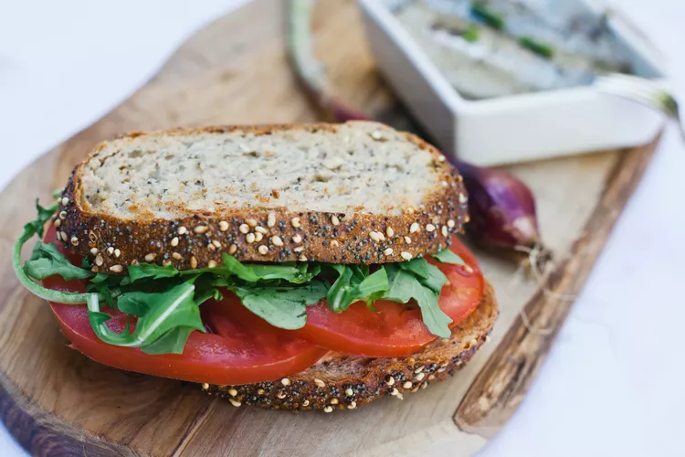

Sandwich

A simple tomato sandwich
Ingredients
- 2 tablespoons ketchup
- 1 tablespoon mayonnaise
- 1/8 teaspoon salt
- 1/8 teaspoon hot pepper sauce
- 4 slices whole wheat bread
- 2 leaves lettuce
- 1 tomato, sliced
Directions
- Combine ketchup, mayonnaise, salt, and hot pepper sauce in a bowl; mix well.
- Toast bread in the toaster. Spread ketchup mixture on all 4 slices of toast.
- Arrange lettuce leaves on a piece of toast, then top with 3 to 4 tomato slices. Cover with another piece of toast.
Return